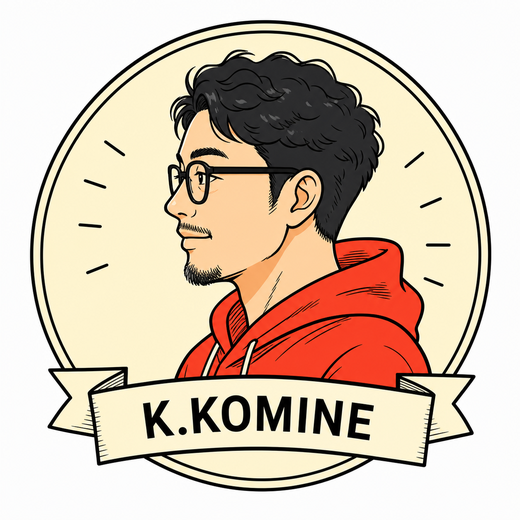

上流から並走するPM
企画・要件定義からリリース・運用まで、事業とユーザーの両面でリードします。
ABOUT ME
Design-capable PM / UX Director
企画・要件定義・UX設計・UI具体化・運用設計までを一気通貫でリード。 AIチャット / SNS / ゲーム / BtoBサービスなど多様なプロダクトで、 ユーザーに価値を届ける仕組みづくりを支援しています。

Design-capable
PM / UX Director
企画・要件定義からリリース・運用まで、事業とユーザーの両面でリードします。
ペルソナ・導線・情報設計をもとに、使いやすく成果につながる体験を設計。
FigmaでのUI設計・プロトタイピングで、チームの認識を揃え品質を担保。
KPI設計・分析に基づく改善提案で、サービスの成長に貢献します。
市場調査 / 競合分析
事業戦略 / KPI設計
コンセプト設計
要件定義 / 仕様設計
情報設計 / 画面設計
会話設計 / 状態設計
ペルソナ / ジャーニーマップ
導線設計 / 情報設計
チュートリアル設計
UI設計 / デザインシステム
プロトタイピング
デザイン改善
WBS / 進行管理
品質管理 / 課題管理
外部パートナー連携
リリース / 運用設計
データ分析 / ABテスト
グロース改善
PM / ディレクターとして参画。企画・要件定義、AIチャット仕様、会話設計、UI/UX設計を担当。
ディレクターとして参画。機能追加や体験改善のディレクションを担当。
求人LP企画・デザイン・コーディングまで担当。短納期での制作を実現。
4タイトルの新規開発・リリース・運用を推進。売上改善やイベント企画、ランキング上位実績に貢献。
市場・ユーザー・現状を調査し、課題と機会を整理します。
コンセプト設計と要件定義を行い、プロジェクトの土台をつくります。
ペルソナ・導線・情報設計で、最適な体験の骨格を設計します。
UIを具体化し、プロトタイプで体験を可視化・検証します。
リリース後もデータを分析し、継続的に改善・成長させます。
FigmaPhotoshopIllustratorCanvaPixAI
ディレクション / PM要件定義情報設計UX設計会話設計仕様設計進行管理
開発・ツールHTMLCSSDreamweaverNotionJiraSlackGitHub
マーケティング/その他SEOGA4アクセス解析KPI分析ABテストSNS運用
一緒に、価値ある体験をつくりましょう！
お仕事のご相談・ご依頼はお気軽にお問い合わせください。